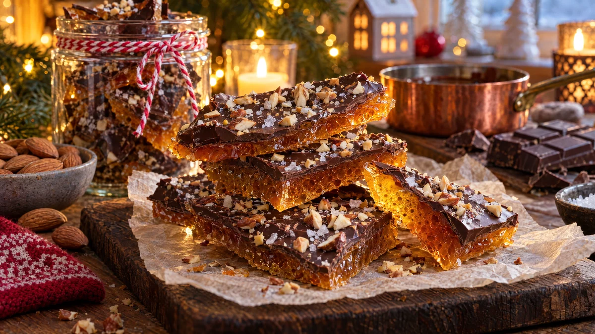

RESTFEST · RECEPTGodis & konfekt
Smörknäck med mörk choklad och rostad mandel
Ett paket smör, socker och en skvätt vatten kokas till en djupt gyllene knäck som spricker med ett krasande ljud. Den täcks med smält mörk choklad, rostad mandel och flingsalt och bryts i stora, oregelbundna flak. Engelsk toffee som ser ut att komma från en dyr chokladbutik.
- Förberedelse
- 10 min + 2 tim stelning
- Tillagning
- 15 min
- Portioner
- ca 40 bitar
- Nivå
- Medelsvårt
 Det här behöver du
Det här behöver du
Tryck på + vid det du behöver köpa.
Knäck
Topping
Gör så här
- Rosta mandlarna i en torr stekpanna i 3–4 minuter och hacka dem fint. Hacka chokladen. Klä en plåt eller en form, ca 20 × 30 cm, med bakplåtspapper.
- Lägg smör, socker, vatten och salt i en kastrull med tjock botten. Smält på medelvärme under omrörning.
- Låt koka och rör ofta i 10–15 minuter, tills knäcken har fått färgen av mörk bärnsten och håller 150 grader på en sockertermometer. Utan termometer: droppa lite i ett glas kallt vatten. Den ska stelna direkt och gå att knäcka.
- Separerar smöret och lägger sig som en hinna, vispa snabbt ner 1 msk varmt vatten.
- Ta kastrullen från värmen, rör ner vaniljsockret och häll knäcken på pappret. Bred ut den till ca ½ cm tjocklek.
- Strö chokladen över den heta knäcken och vänta 3–5 minuter, tills den har smält. Bred ut chokladen jämnt med en slickepott.
- Strö över mandeln och flingsaltet. Låt stelna i rumstemperatur i minst 2 timmar och bryt sedan knäcken i bitar.
Dekoration och servering
- Bryt knäcken i stora, oregelbundna flak, så syns lagren av gyllene knäck och mörk choklad i brottytan.
- Lägg flaken i en glasburk eller en låda med bakplåtspapper mellan lagren.
- Servera till kaffe eller som en del av en konfektask med de andra recepten i kategorin.
- Kokhet knäck ger svåra brännskador. Låt barnen hjälpa till med toppingen, inte kokningen.
- Knäcken håller ca 2 veckor i en lufttät burk i rumstemperatur.
Mått och ugnstemperaturer
Måtten är svenska (dl, msk, tsk, krm). Ugnstemperaturerna gäller vanlig ugn med över- och undervärme; med varmluft, sänk med 20 grader.